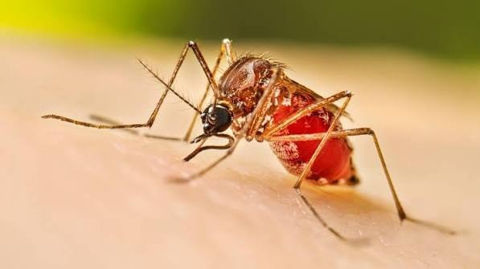
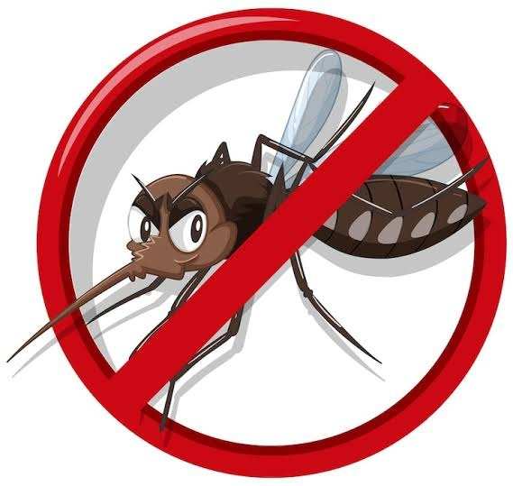

DIRECCIÓN REGIONAL
DE SALUD SAN MARTÍN UNIDAD DE GESTIÓN DE
ENFERMEDADES TRANSMISIBLES
DE SALUD SAN MARTÍN UNIDAD DE GESTIÓN DE
ENFERMEDADES TRANSMISIBLES
SISTEMA ACTIVO
VIGILANCIA EPIDEMIOLÓGICA
Y CONTROL VECTORIAL
DASHBOARD DE INSPECCIONES Y CONTROL DE DENGUE
Seguimiento de viviendas, criaderos e intervenciones de control vectorial para fortalecer la vigilancia y prevención del dengue en la región San Martín.
🏠
VIVIENDAS
INSPECCIONADAS
🦟
CRIADEROS
IDENTIFICADOS
🔎
INTERVENCIONES
DE CONTROL
📊
ANÁLISIS
Y REPORTES
INGRESAR AL SISTEMA
Plataforma de vigilancia y
control vectorial
→
2026
Periodo
📍 San Martín
Región
🛡️ UNGET
Control Vectorial

Aedes aegypti
Principal vector del dengue

PREVENCIÓN Y CONTROL
DEL DENGUE
🦟